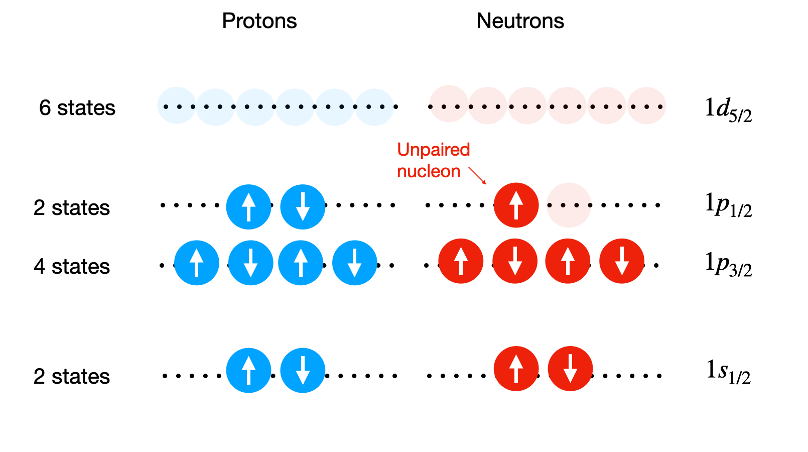
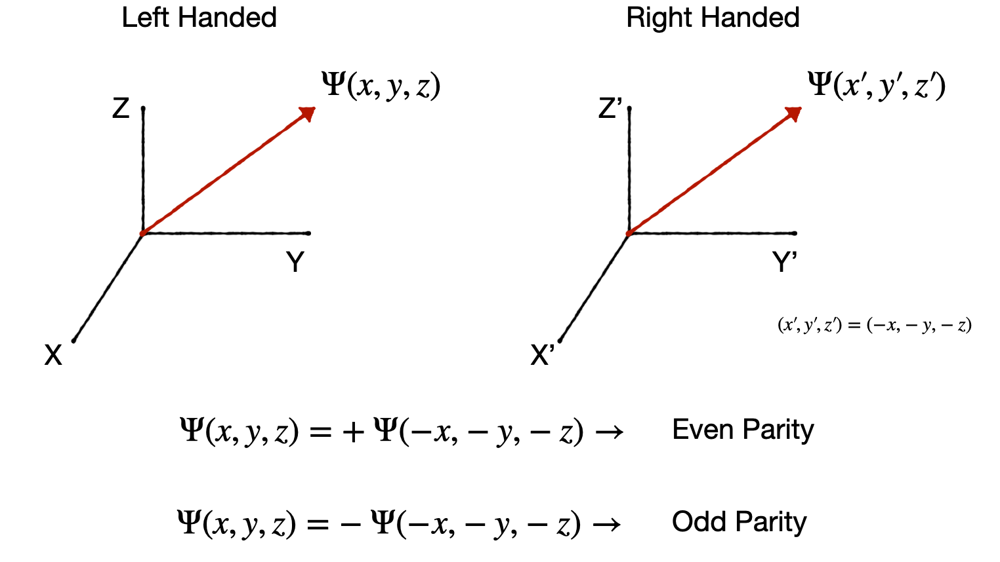
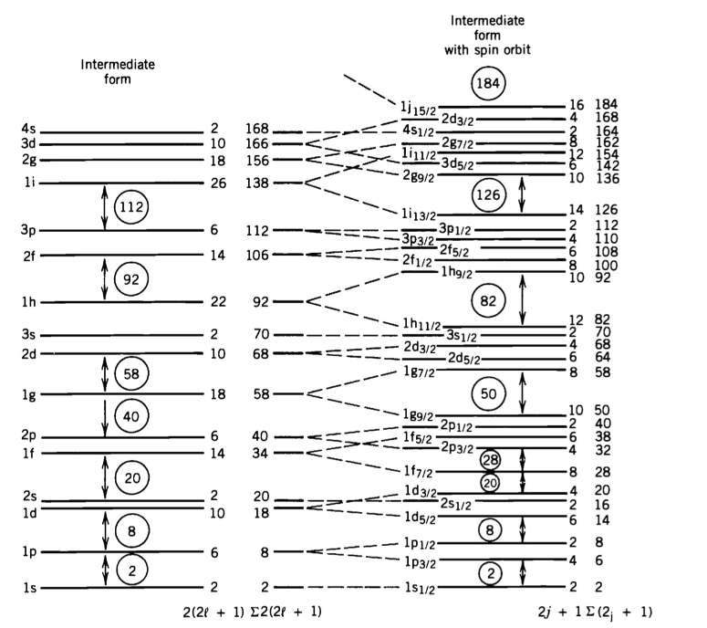

4. Nuclear Spin & Moments#
Quick Links
From the Reading List
Nuclear properties [Krane] Chapter 5
Collective models [Krane] Chapter 5
Summary of models [Martin] Chapter 7.5
4.1. Nuclear Properties#
Now that we have our shell model, which describes our observed magic numbers, we can start making predictions for other nuclear properties such as the Nuclear Spin, \(I\). This quantity comes from the principle of summing up all the individual Total Angular Momentum numbers \(j\) of all the nucleons, doing this separately for neutrons and protons.
However, we can simplify things hugely because the \(j\) values are half-integer and in any filled shell, all the nucleons there will pair up as positive-negative pairs and so contribute nothing to the overall total. So, we really only need to worry about the nucleons in the outer shell. If this shell is full, then again the total contribution will be zero, and we have \(I=0\). In fact, in general, if we have even N and even Z, then \(I=0\) as all nucleons will form spin up-down combinations.
The more interesting case is when we have one unpaired nucleon in the outer shell. Consider the case of a nucleus with the proton energy levels filled up exactly, but where the neutrons in the outer shell have just one neutron. The nuclear spin takes on the \(j\) value assigned to that nucleon.
That is, if we fill up the levels with nucleons but have a leftover nucleon, alone in an unfilled shell, the level spin assignment appropriate to that nucleon will be the same as the Nuclear Spin itself.
Similarly, consider a case where all the levels are filled perfectly for one class of nucleons (say the protons) but for the other (say neutrons), we are just one nucleon short of filling the last level (like having a nucleon “hole” in that shell). In this case, the Nuclear Spin just takes on the level spin assignment appropriate to that missing nucleon.
4.1.1. Nuclear Spin Example#
Here is an example for \(^{15}_{8}\textnormal{O}\).
 From the level diagram above, we predict that the nuclear spin of O-15 is \(I=1/2\) due to the unpaired neutron in the outer \(1\textnormal{p}_{1/2}\) level having a \(j=1/2\). This is indeed what is measured in reality.
Things get harder if instead we only have a partially filled outer shell but an odd number of nucleons. We can assign \(I=j\) of the unpaired nucleon again, but this does not work for all nuclei, and in some cases, we would need to try to sum up the entire shell structure to get a valid result.
The main points here are that:
even-even nuclei have spin zero due to always having the spins of individual nucleons pairing up and canceling out.
Odd-even nuclei typically have half-integer spins which can range from 3/2, 5/2, 1/2. In simple cases, the spin of the missing nucleon can give \(I\).
Odd-odd nuclei can achieve spin states much higher such as 1 or 3 but are more complex and typically require a full evaluation of the expectation values of the possible spin states. Because we expect to have two unpaired nucleons (one proton and one neutron) we expect Odd-odd nuclei to usually have integer numbers.
4.1.2. Nuclear Parity#
The next thing we can do with our shell model is predict the parity of the nucleus. Parity is a transformation whereby the sign of the coordinate system is changed, as below. The parity transformation changes a right-handed coordinate system into a left-handed coordinate system or vice-versa.

As shown, the wave function of a nucleon in a stationary state can have either odd or even parity depending on what happens under the transformation. It’s convenient to think of a Parity Operator \(P\) with effect \(P\Psi(r) = \Psi(-r)\). If \(\Psi\) has a unique parity, then \(P\psi(r) = \pm \Psi(r)\), and parity \(\pm1\) are the eigenvalues of \(P\). Parity is often denoted as \(\pi\), so \(\pi=\pm 1\).
It is simple to find the parity of a nucleon; it’s just \(\pi=(-1)^{l}\) where \(l\) is the Orbital Angular Momentum. Again, remember from our notation the letter corresponds to the value of \(l\) (0-s, 1-p, 2-d, 3-f). Parity is a multiplicative quantity. The parity assignment of a nucleus, therefore, comes from the product of the parity of all the nucleons
When considering parity alongside the Nuclear Spin, the nomenclature is to write it as: \(I^{\pi}\). For example, the state \(0^{+}\) has zero nuclear spin and even parity.
When trying to estimate parity, we can simplify things in the same way as we did for nuclear spin. If the nucleons all pair up, then we end up with even parity. If we are left with an unpaired nucleon, then the parity comes from the \(l\) value appropriate to the level in which that nucleon sits.
As an example, if we return to our example of O-15 above, the unpaired nucleon sits in the p-level, \(l=1\), so the parity of the nucleus is \((-1)^{l}=-1\). This means it has odd parity, and we would write both its spin and parity state as: \(I^{\pi}=\frac{1}{2}^{-}\).
4.1.3. Shell Challenges#
So, the shell model gives us a pretty good description of nuclei based on QM principles. It provides a solid basis for understanding the Magic Numbers, Nuclear Spin, and Parity of Nuclei. However, it’s worth noting a few remaining issues that can cause problems. This leads to several corrections usually being applied to the potential to better fit observed data.
Most importantly, there are two corrections for protons:
It turns out that the shell ordering changes a bit as \(A\) increases due to residual interactions between nucleons, but this is not big enough to affect the Magic Numbers.
The effective potential well shape, and hence the energy levels, are actually slightly different for protons and neutrons as we should account for the additional proton-proton Coulomb interaction. Nevertheless, the top energy levels containing neutrons will be at nearly the same energy as the top energy levels containing protons for the purposes of most calculations.
The effective potential well shape should also be modified for protons to account for their influence of atomic electrons.
This electrostatic repulsion energy between protons implies a decrease in the depth of the potential for protons, due to their interaction with all the other protons, as here:
{kind=link}
Fig. 4.1 Diagram of differences in potential wells for protons and neutrons.#
If all these final tweaks are taken into account, the shell model becomes a powerful complement to the LDM (Liquid Drop Model) and SEMF (Semi-Empirical Mass Formula) models, based on the idea that the total angular momentum of each single nucleon is the vector sum of its spin and orbital angular momentum.
4.1.4. Shell Model Summary#
Taking the Shell Model nucleons together leads to nuclear levels. Any level (specified by \(n\), \(l\), \(j\)) which is fully occupied (i.e., has 2j+1 occupants) contributes nothing to the total spin as the total angular momenta \(j\) of the occupants sums to zero. (j+1) is an even number for all single particle levels, i.e., in a model where single particles orbit in the potential of all others. Thus, in nuclei where protons and neutrons separately fully occupy shells (even-even), nuclear spin should be zero, and it is.
Also, if two neutrons (or protons) occupy a level with the same \(j\) and \(l\), then their total angular momenta couple to give zero contribution.
Now, if we add one nucleon to a fully filled shell, this should leave the nucleus with the total angular momentum \(j\) \((=l)\) of that nucleon alone. The prediction of the ground spin state and parity is a great success of the shell model. It predicts that all even-even nuclei will have zero angular momentum and an odd A nucleus will have the angular momentum of the odd nucleon.
Remember we can use the shell diagram below to estimate the unpaired nucleon spin state.

Here is a table showing a few of the successful predictions based on this diagram.
Nuclei |
\(Z\) |
\(N\) |
Shell model |
Observed State |
|---|---|---|---|---|
17O |
8 |
9 |
\(l=2, ~ j=5/2\) |
\(\pi=+, I=5/2\) |
17F |
9 |
8 |
\(l=2, ~ j=5/2\) |
\(\pi=+, I=5/2\) |
43Se |
21 |
22 |
\(l=3, ~ j=7/2\) |
\(\pi=-, I=7/2\) |
209Pb |
82 |
127 |
\(l=4, ~ j=9/2\) |
\(\pi=+, I=9/2\) |
209Bi |
83 |
126 |
\(l=5, ~ j=9/2\) |
\(\pi=-, I=9/2\) |
In the next section, we will go further to look at “Collective Models” that can go some way to solving these issues.
4.1.5. Towards Collective Nuclear Models#
It is now worth exploring the Shell Model a bit more, to see how far we can push predictions with it, to see how and when things break down and how this forces us towards a Collective Model. A first property to examine is the Magnetic Moments of Nuclei.
We know that nuclei possess Nuclear Spin \(I\), that can be predicted by the Shell Model. Associated with each Nuclear Spin is the possibility of a Magnetic Dipole Moment - a nuclear magnetic moment, which can produce magnetic interactions within the environment. In the case of our nuclei, it is the flow of charge (a current) around the nucleus that produces a magnetic moment.
More precisely, the term Magnetic Moment \((\mu)\) refers to the Torque arising when something is placed in a magnetic field, as can happen with more traditional electric currents. So, for nucleons in nuclei, we require net motion of charge, e.g., a finite amount of spin \(s\) and/or angular momentum \(l\). In the shell model, this is encompassed in the total Nuclear Spin \(I\). Because of this, we expect that predictions can be made of \(\mu\) based on \(I\).
Now both protons and neutrons also have their own Intrinsic Magnetic Moments. They both have spin motion, and although the neutron is nominally neutral, it has an Internal Charge Structure due to the Quarks inside, so there is an effective charge motion inside it, like the proton itself. The magnetic moment of a nucleus can therefore be determined through a combination of the individual magnetic moments of the nucleons and the total associated spin of the nucleus.
where \(g_{I}\) is a nuclear gyromagnetic \(g\) factor which accounts for differences in the relative magnetic moments of nucleons, \(e\) is the charge of one electron (quantized charge), \(m_{p}\) is the mass of the proton, and \(\mu_{N}\) is the nuclear magneton. The parameter \(g\), is referred to as the gyromagnetic ratio, a dimensionless quantity that characterizes the magnetic moment, just a proportionality constant that relates the magnetic moment to the total angular momentum or nuclear spin quantum number.
The nuclear magneton is a constant used to express magnetic moments, and is equal to
For the case of unpaired nucleons, we can apply the same rules we considered previously to calculate the nuclear magnetic moment. This is simply the nuclear magneton multiplied by the \(j\) value of the unpaired nucleon.
Note here that the \(g\) factor has now changed to \(g_{j}\) as it depends on the gyromagnetic ratio needed for the state of the nucleus being considered. For protons and neutrons, the gyromagnetic ratios are given by \(g_{p}=2.793\) and \(g_{n}=-1.913\) respectively, however for a nucleus, it is more complex for us to calculate.
Note that the \(\mu_N\), Nuclear Magnetron, yields the energy \(E\) of the Nuclear Magnetic Dipole in a B-field as \(E=\mu_N B\). The Nuclear Magnetron is analogous to the Bohr Magnetron in atomic physics but with the electron mass replaced by the proton mass. It is much smaller than the Bohr Magnetron.
In practice, the Observed Magnetic Moment in an external B-field comes from the z-component. That is when the nucleus is put in a magnetic field, it is the vector \(j\) that starts to precess with fixed values along the z-axis. In a full QM treatment (beyond our scope here), the observed Magnetic Moment of the nucleus turns out to be
and we evaluate the magnetic moment from the expectation value of the magnetic moment operator in the state with the maximum possible z projection of the angular momentum.
Based on the equations above, we can see that if the nuclear spin, \(I\), or \(j\) value of an unpaired nucleon is equal to zero, then \(\mu=0\). So, the first basic shell model prediction is simply all Even-Even \(I=0\) states have no magnetic moment.
For other combinations of protons and neutron at higher orbital angular momentum, it gets more complicated, and we need to account for the gyromagnetic ratio in the equation. There are two components to \(g\), governing the angular momentum \(g_l\) and spin \(g_s\), with different values for the proton and neutron. The total \(g\) is calculated according to the coupling of \(l\) and \(s\) and the relation to \(j\).
The result, just given here is:
However, if we take into account the possible values of each quantum number, that \(s=1/2\) or \(-1/2\) and that \(s\) and \(l\) can combine to give \(j\) by \(j=l+1/2\) (“Stretched”) to \(j=l-1/2\) (“Jackknife”), then we arrive at only two possible scenarios for \(g\):
These are called the Schmidt Lines for nuclear magnetic moments where the \(g\) values here are given by:
As seen here, the neutron has zero value for \(g_l\) but a finite value for \(g_s\). Interestingly, the value of \(g_s\) for the proton is much greater than would be expected. This again is indicative of an internal structure, i.e., the quark content.
So, based on this QM treatment and the Shell Model, we can make predictions of the Nuclear Magnetic Moments of nuclei, simply from working out the Nuclear Spin \(I\) and finding \(j\). The easiest case is, as usual, when we have a single nucleon in an otherwise unfilled shell.
Consider \(^{17}O\):
this has a neutron in the \(1\textnormal{d}_{j=5/2}\) level.
Using the \(g\) values above, we get \(\mu = -1.91\mu_N\).
The measured value is \(-1.89\mu_N\).
Unfortunately, as we can see in the figures below, in general, the calculated values lie within the appropriate maximum range of the Schmidt Lines set by the Odd nucleon but do not sit on the limits. The method can therefore be used to estimate the minimum and maximum magnetic moments for different nuclei but cannot necessarily predict their properties exactly. For instance, if instead, we take K-39, which has an odd proton in \(d_{3/2}\). The calculation gives 0.09\(\mu_N\) compared to a measured value of 0.39\(\mu_N\).
The fact that the majority of nuclei lie between these two lines is indicative of a more complex mixing of states, for instance, such might be caused if the Shell model assumption that nuclei are in a spherically symmetric potential well is not always true.
{kind=link}
Fig. 4.2 Magnetic moments of even-Z odd-N nuclei in terms of Nuclear Magnetons. The lines are calculated and the points are experimental determinations.#
4.1.6. Electric Quadrupole Moments#
We now consider the static distribution of charge, rather than currents, in the nucleus. This leads us to the idea of the nuclear Electric Quadrupole Moment, a parameter which describes the shape of the nuclear charge distribution.
If we consider the shape of nuclei in the shell model, the simplest case would be when the first shell is full, and we assume a spherical shape. Hence, we would expect a zero Electric Quadrupole Moment (EQM). If we, say, add one extra nucleon in the outer shell, then we would expect a non-spherical charge distribution to form and hence a finite EQM to appear. This is indeed the case, as seen in the plot here previously discussed. In the plot below we see how the EQM varies as a function nucleons and how some predictions of the EQM line up with observations.

So how can we quantify this, firstly note that there are different types of electric moment. We could have an electric dipole moment, however as we only have positive charges of proton this does not exist in nuclei as there is no opposite charge in the nucleus that could sit on the other end of the dipole. This means only higher order types Quadrupole, Octupole, etc, are allowed. We can think of a quadrupole moment as the sum of two dipoles set antiparallel from one another.
In the classic form we can describe the EQM for a quadrupole as:
where \(\rho\) is the charge density distribution, and \(Q_{EQM}\) has units of area, usually barns. We can see here that if the nucleus is spherical then \(z^{2}=x^{2}=y^{2}=r^{2}/3\) which leads to \(Q_{EQM}=0\).
Again with the shell model we can make a few predictions for simple cases, such as when we have a proton in orbit in the outer shell, or a shell that is one proton short of being filled up.
To do this we need the full Quantum Mechanical version of the equation above which is
Calculations to find the expectation value \(< \psi >^{2}\) end up giving as values for \(Q_{EQM}\) of:
where \(j\) is the Angular Momentum Quantum Number of the odd particle (equivalent to the Nuclear Spin) and \(r\) the radius.
4.1.6.1. Even Nuclei#
Based on the equations for EQM we expect that for Even-Even Nuclei \(Q_{EQM}\) should be around zero.
4.1.6.2. Odd Protons#
If we have unpaired protons then we have two possible cases:
If we have a single odd proton in an outer shell in an orbit of given \(j\), the maximum projection \(m_j\) will put vector \(j\) close to alignment with the \(z\) axis. In this case the proton will be in orbit in the \(x-y\) plane. This is equivalent to a so called Oblate charge distribution and \(Q_{EQM}<0\). Note how in this case, with charge concentrated on the \(x-y\) plane \((z=0)\) then we have:
If the proton is missing from a closed shell (i.e. a kind of proton hole), then we get a Prolate charge distribution and \(Q_{EQM}>0\). In this case charge is more concentrated on the \(z\) plane \((z=r)\) and we have:
{kind=link}
Fig. 4.3 Different shape states of nuclei with odd protons.#
4.1.6.3. Odd Neutrons#
For neutrons, things start to get a bit stranger. Although the neutron is neutral, one might expect that an odd neutron in the outer shell outside the core would make no difference to \(Q\). However, due to the nuclear force, the neutron will attract protons in the core and form a ridge or tide of nuclear material. In this case, we expect a small negative \(Q\), similar to if we had an odd unpaired proton.
{kind=link}
Fig. 4.4 Different shape state of nuclei with odd neutrons.#
Working through the numbers, we find typical values for the Electric Quadrupole Moment (EQM) with odd neutrons in the range of \(-0.06\) to \(0.6 \textnormal{b}\) (barns).
4.1.6.4. Half Filled Shells#
But what if we have several nucleons in a partially filled outer shell? As with other predictions in the Shell Model, in general, it is harder to calculate this explicitly because all the nucleons can contribute. However, a basic derivation yields:
where \(Q_{sp}\) is the Single Particle Value as mentioned above, and \(n_{c}\) is the number of nucleons in the partially filled shell. Here, \(n_{c}\) can range from \(1\) to \(2j\). So, when \(n_{c}=2j\), a shell that is only one nucleon from being filled, we get \(Q_{EQM}=-Q_{sp}\).
4.1.7. EQM Predictions#
Using the results above with \(R=r_{0}A^{1/3}\), and \(\sqrt{\langle r^{2}\rangle} = 0.94 A^{1/3}\) we can calculate the \(Q\) values for different nuclei and compare them with the measured values. Some results are shown in the table below. Generally, at least the correct sign is found, but often the real value is larger than expected.
Shell-Model State |
Calculated Q (b) |
Single Particle (b) |
Single Particle (b) |
Single Hole (b) |
Single Hole (b) |
|---|---|---|---|---|---|
p Particle |
n Particle |
p Hole |
n Hole |
||
\(1p_{3/2}\) |
-0.013 |
-0.0366 (7Li) |
- |
+0.0407 (11B) |
+0.053 (9Be) |
\(1d_{5/2}\) |
-0.036 |
-0.1 * (19F)* |
-0.026 (17O) |
+0.140 (27Al) |
+0.201 (25Mg) |
\(1d_{3/2}\) |
-0.037 |
-0.08249 (35Cl) |
-0.064 (33S) |
+0.056 (39K) |
+0.45 (35S) |
\(1f_{7/2}\) |
-0.071 |
-0.26 (43Sc) |
-0.080 (41Ca) |
+0.400 (59Co) |
+0.24 (49Ti) |
\(2p_{3/2}\) |
-0.055 |
-0.209 (63Cu) |
-0.0285 (53Cr) |
+0.195 (67Ga) |
+0.20 (57Fe) |
\(1f_{5/2}\) |
-0.086 |
- |
-0.20 (61Ni) |
+0.274 (85Rb) |
+0.15 (67Zn) |
\(1g_{9/2}\) |
-0.13 |
-0.32 (93Nb) |
-0.17 (73Ge) |
+0.86 (115In) |
+0.45 (85Kr) |
\(1g_{7/2}\) |
-0.14 |
-0.49 (123Sb) |
- |
+0.20 (139La) |
- |
\(2d_{5/2}\) |
-0.12 |
-0.36 (121Sb) |
-0.236 (91Zr) |
- |
+0.44 (111Cd) |
Things work best when we consider nuclei close to the magic numbers in most cases. Take for example the following selected nuclei.
Nuclei |
\(Z\) |
\(N\) |
Character |
\(j\) |
\(Q_{obs}\) (b) |
\(Q_{pred}\) (b) |
\(Q_{obs}/Q_{pred}\) |
|---|---|---|---|---|---|---|---|
17O |
8 |
9 |
doubly magic+1n |
5/2 |
-2.6 |
-0.1 |
20 |
39K |
19 |
20 |
doubly magic-1p |
3/2 |
+5.5 |
+5 |
1.1 |
175Ku |
71 |
104 |
between shells |
7/2 |
+560 |
-25 |
-22.4 |
209Bi |
83 |
126 |
double magic+1p |
9/2 |
-35 |
-30 |
-1.1 |
We see good agreement for Double Magic Number nuclei plus or minus one proton, poor agreement when odd neutrons are considered in O-17, and terrible agreement with a big nucleus with a partly filled outer shell such as Lu-175. In general nuclei with atomic mass numbers in the range \(150<A<190\) and \(A>200\) have very large Quadrupole moments (the break here is due to a magic number).
4.1.8. Summary#
Before moving on, let’s summarize the shell model conclusions. The shell model is a powerful, albeit incomplete, complement to the Liquid Drop Model (LDM) and the Semi-Empirical Mass Formula (SEMF) that can:
Accurately account for ground state spins and parities.
Explain why even-even nuclei have zero Nuclear Spin.
Account for some excited state spins and parities and explain why the spin of odd-A nuclei is that of the Unpaired Nucleon.
Show that if two neutrons (or protons) occupy a level with the same \(j\) and \(I\), then the Total Angular Momentum couples to give zero contribution to nuclear spin.
Account for selected Magnetic Dipole Moments - these near closed shells agree with Schmidt Lines.
Account for some observed Quadrupole Moments - at least the correct sign for closed shells + 1 nuclei.
However, unfortunately, the model has some shortcomings:
The model still makes no robust predictions for Odd-Odd nuclei.
Predictions fail for Excited Nuclei above ~2MeV, as large excitations in the core can complicate the energy levels picture.
The Shell Model can make predictions of the Nuclear Magnetic Moments and the Electric Quadrupole Moments, but for large nuclei and nuclei away from filled shells, these predictions poorly match the data.
It is observed that nuclei have Excitation Levels and states far from what can be explained by the Shell Model. It turns out that these are associated with bulk motions of the nuclear material, notably rotation and vibration states.
These failings, particularly in the magnetic moment and EQM data, indicate a large deviation away from spherical charge distributions, suggesting that in some cases, the nucleus can be grossly distorted in shape. For the EQM, we have to conclude that some nuclei are much further from spherical than the shell model can allow.
In reality, many nuclei appear to have permanent distortions away from simple spheres. A possible explanation is that interactions occur between the outer nucleons and the closed shells, which leads us into the idea of Collective Models. Here, we need to examine what new energy state might arise from bulk nuclear matter distortions in our model.